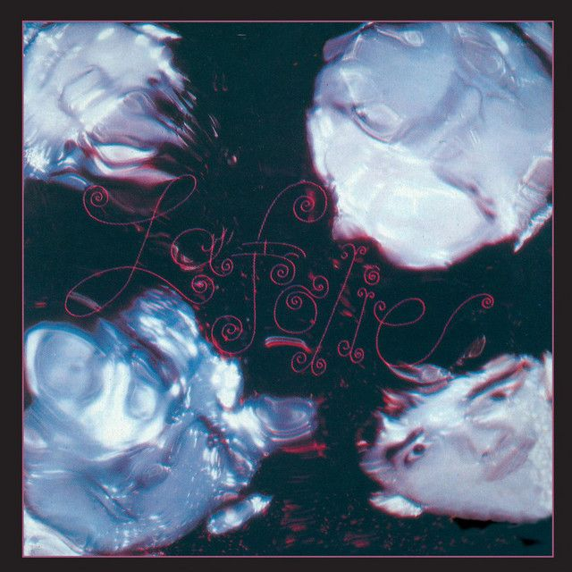
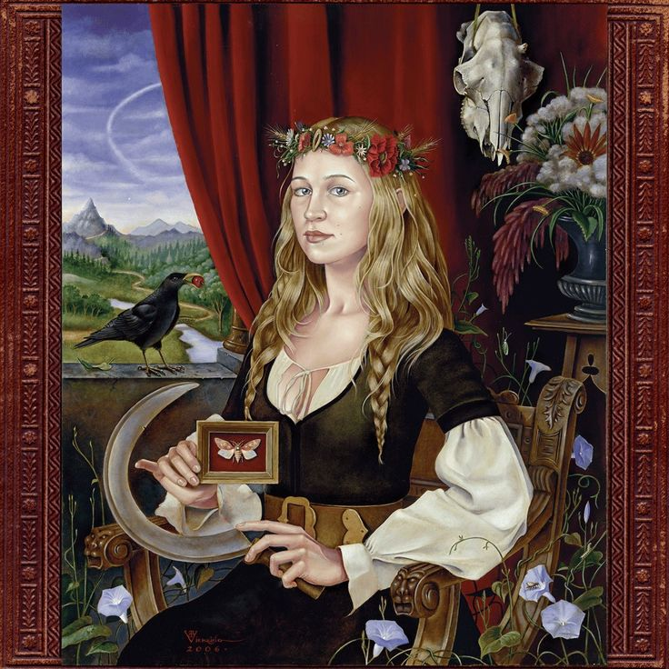

LP
Selecciona una canción
Datos de la canción.
Aquí aparecerá información adicional de la canción seleccionada.
Playlist ˙ . ꒷ 🪼 . 𖦹˙
Sleep Talking
 Bigmouth Strikes Again
Bigmouth Strikes Again
American Wedding

Golden Brown

Only Skin